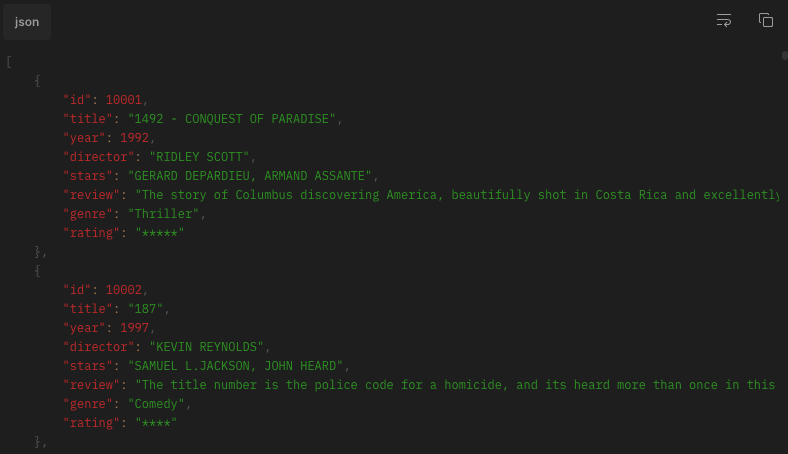
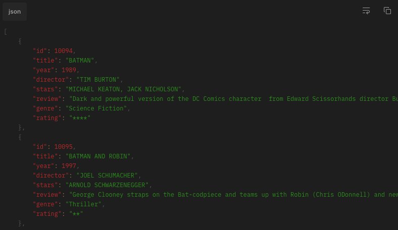
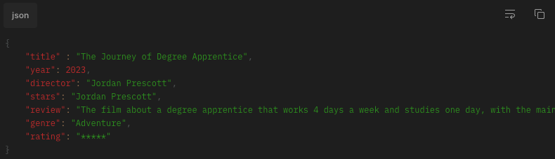
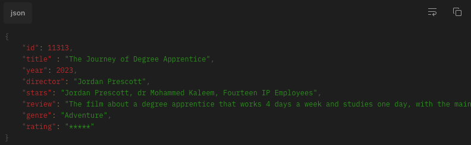
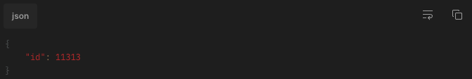

Welcome to our Films API documentation! We're thrilled that you're here and ready to dive into the exciting world of film data. Our API offers a wealth of information about films, including their titles, release dates, genres, and more. Whether you're building an app to help users find the perfect movie for a cozy night in, or creating a tool to analyze film trends, our API has everything you need. And to make things even more fun and convenient, we've included a Postman button that lets you easily copy our API calls into your Postman environment.This is the complete documentation for this API and comes with example calls, details of headers and parameters, and code snippets. Please use this for complete information on the API. So what are you waiting for? Let's start exploring the world of film!
Our Films API offers a variety of calls to help you access film data quickly and easily. Take a look below!
This REST API endpoint allows the user to retrieve all films from a database in the format of their choice - JSON, XML, or TEXT. To specify the desired data format, the user should include an "Accept" header in their HTTP request, with the value set to the desired format. The APi will then return a list of all films in the format chosen.
Example response.
This Rest API endpoint allows users to retrieve a series of films in the format they require by adding a header Accept with the data format they want. The API supports two query parameters of searchBy and searchString. searchBy is the what type of data you are querying this includes id, title, year, director, stars, genre and rating. searchString is the value you are. looking for such as the title of 'Batman'. The resulting films will be returned in the requested format, whether it be JSON, XML, or TEXT.
Example response.
This Rest API endpoint allows users to add a film to the database by sending a request with the necessary details in the body of the request. Users can send the details of the new film in the JSON, XML, or TEXT format by specifying the format in the Content-Type header. The body of the request should include details like the film's title, year, director, stars, review, genre, and rating in the format specified in the header. Once the API receives the request, it will process the data and add the new film to the database.
Example body.
This REST API endpoint updates an existing film in the database by including the ID of the film in the request body along with all fields must have a value or it will be removed. The format of the request body must be specified with the Content-Type header, and it can be either JSON, XML, or TEXT. The request body must include the ID of the film to update and any parameters to modify, such as title, year, director, stars, review, genre, and rating.
Example body.
This Rest API endpoint allows users to delete a film from the database by sending a request with the ID of the film to be deleted in the body. The body must be in JSON, XML, or TEXT format, and the Content-Type header must be set to the corresponding data type. Only the ID of the film to be deleted should be included in the body. Once the request is received, the API will find the corresponding film in the database and delete it.
Example body.
